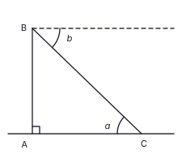
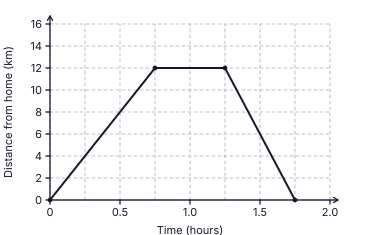
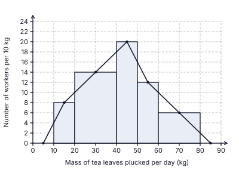
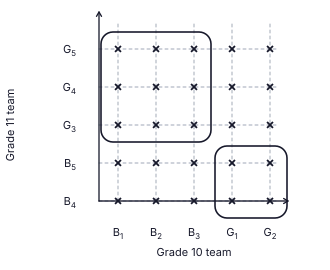
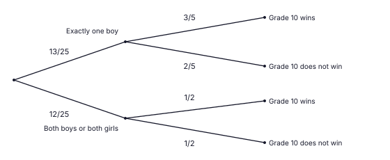

25. Bisect ∠BAC (arcs from P and Q meet; draw the bisector from A); draw the perpendicular to AB at B (arcs from R and S meet; draw the line through B). They meet at O.
Final answer: O is the intersection; OB ≈ 3.5 cm (3.3 – 3.7 accepted)

1. 12 × 15 = n × 10 ⇒ n = 18 workers; extra = 18 − 12
Final answer: 6 workers
(2 marks)2. Through E draw a line parallel to AB (and CD): ∠BAE + ∠ECD = ∠AEC ⇒ ∠BAE = 115° − 45°
Final answer: ∠BAE = 70°
(2 marks)3. 3×3 + 5×2 − 2×412x = 9 + 10 − 812x
Final answer: 1112x
(2 marks)4. The faces of a right triangular prism are two triangles and rectangles. A parallelogram with no right angle is not a rectangle.
Final answer: (iii) ticked
(2 marks)5. 8 students ↔ 20° ⇒ 1° ↔ 0.4 students; athletics: 180° ⇒ 180 × 0.4 (or 8 × 9)
Final answer: 72 students
(2 marks)6. ∠ADB = ½ ∠AOB; ∠AEB + ∠ADB = 180° (cyclic) ⇒ ∠ADB = 40°; CD bisects ∠ADB (symmetry, AC = CB)
Final answer: ∠CDB = 20°
(2 marks)7. 3(x2 − 25) = 3(x − 5)(x + 5)
Final answer: 3(x − 5)(x + 5)
(2 marks)8. lg 6000 = lg 6 + lg 1000 = 0.7782 + 3
Final answer: 3.7782
(2 marks)9. a marked at C (between CA and CB) and b marked at B (between the dashed horizontal and BC); alternate angles
Final answer: a = b

10. Curved surface = 2πr(3r) = 6πr2; base = πr2; ratio = 6πr2 : πr2
Final answer: 6 : 1
(2 marks)11. Total outcomes = 4 × 4 = 16; sum 10: (3, 7), (5, 5), (7, 3) = 3 outcomes
Final answer: 316
(2 marks)12. Exterior angle: ∠DBC = 40° + 40° = 80° (AB = BD); DB = DC ⇒ ∠DCB = 80°; x = 180° − 80° − 80°
Final answer: x = 20°
(2 marks)13. A ∩ B = {6} (A = {3, 6, 9}, B = {2, 4, 6, 8, 10}); A ∪ B = {2, 3, 4, 6, 8, 9, 10}, n = 7
Final answer: (ii) ticked
(2 marks)14. 24x6y48xy2
Final answer: 3x5y2
(2 marks)15. Common ratio r = (−12) ÷ (−4) = 3; T4 = −36, T5 = −108 (or T5 = T3·r2 = −12 × 9)
Final answer: −108
(2 marks)16. ∠BDC = ∠BAC = 28° (same segment); ∠ADC = 2 × 28° = 56°; ∠CBE = ∠ADC (exterior angle of a cyclic quadrilateral)
Final answer: ∠CBE = 56°
(2 marks)17. Coefficients: HCF(8, 12, 20) = 4; a: lowest power a1; b: lowest power b1; c is not common
Final answer: 4ab
(2 marks)18. Prism volume = 38.5 × h = πr2h ⇒ (22/7) r2 = 38.5 ⇒ r2 = 38.5 × 7/22 = 12.25
Final answer: r = 3.5 cm
(2 marks)19. DE2 = 102 − 62 = 64 ⇒ DE = 8 cm; BC = 2DE = 16 cm; BD = 6 cm; CE = AE = 10 cm. Perimeter = 16 + 10 + 8 + 6
Final answer: 40 cm
(2 marks)20. Gradient = (13 − 4)/(5 − 2) = 3; y − 4 = 3(x − 2)
Final answer: y = 3x − 2
(2 marks)21. ∠DAB = ∠BCD = 64° (opposite angles of a parallelogram); ∠AEB = 90° (angle in a semicircle); ∠ABE = 180° − 90° − 64°
Final answer: ∠ABE = 26°
(2 marks)22. Amount at end of year 1 = 21 600 − 3 600 = Rs 18 000; 18 000 = P × (120/100) ⇒ P = 18 000 × 100/120
Final answer: Rs 15 000
(2 marks)23. ∠OBD = ∠AOB = 70° (alternate angles, OA ∥ BD); OB = OD ⇒ ∠ODB = 70°, ∠BOD = 180° − 140° = 40°; ∠BED = ½ ∠BOD
Final answer: ∠BED = 20°
(2 marks)24. 5x > 3 − 28 = −25 ⇒ x > −5
Final answer: −4, −3, −2, −1
(2 marks)25. Bisect ∠BAC (arcs from P and Q meet; draw the bisector from A); draw the perpendicular to AB at B (arcs from R and S meet; draw the line through B). They meet at O.
Final answer: O is the intersection; OB ≈ 3.5 cm (3.3 – 3.7 accepted)
| (i) | |
| Remainder after food = 1 − 15 = 45 | 1 |
| (ii) | |
| Spent on other expenses = 38 of 45 = 310 of the money received (method) | 1 |
| Remaining = 45 − 310 = 12 (or 45 × 58 = 12) | 1 |
| (iii) | |
| Money received = 95 000 × 2 = Rs 190 000; food = 15 × 190 000 = Rs 38 000 | 1 |
| Remainder after food = 190 000 − 38 000 = 152 000; other expenses = 38 × 152 000 = Rs 57 000 | 1 |
| (iv) | |
| Let the part of the salary above Rs 100 000 be Rs y. Tax = 10% of y. Salary − tax = money received: 100 000 + y − 0.1y = 190 000 | 1 |
| 0.9y = 90 000 ⇒ y = 100 000 | 1 |
| Salary = 100 000 + 100 000 = Rs 200 000 (tax paid Rs 10 000 — check: 200 000 − 10 000 = 190 000) | 1 |
| (v) | |
| 38 000200 000 × 100 | 1 |
| 19% | 1 |
Total marks: 10
| (a)(i) | |
| Horizontal line from (0.75, 12) to (1.25, 12) (staying 30 minutes) | 1 |
| Return segment ends at the correct time 1.25 + 0.5 = 1.75 h, at distance 0 (point (1.75, 0)) | 1 |
| Straight line segments joined correctly: (0.75, 12) → (1.25, 12) → (1.75, 0) | 1 |
| (a)(ii) | |
| Speed = distance ÷ time = 12 ÷ 0.5 (or 1230/60) | 1 |
| 24 km/h | 1 |
| (b)(i) | |
| Length of the semicircular arc = π × 3.5 = 227 × 3.5 (or ½ × 2πr) | 1 |
| = 11 cm | 1 |
| Perimeter = 11 + 22 + 7 + 22 = 62 cm (AB is not part of the boundary) | 1 |
| (b)(ii) | |
| Area of rectangle = 7 × 22 = 154 cm²; area of semicircle = ½ × 227 × 3.5 × 3.5 = 19.25 cm² | 1 |
| 154 ÷ 19.25 = 8 times | 1 |

Correct graph (above): (0, 0) → (0.75, 12) → (1.25, 12) → (1.75, 0). Accept points within half a small square.
Total marks: 10
| (i) | |
| Rates = 20100 × 88 000 (on the assessed annual value) | 1 |
| = Rs 17 600 | 1 |
| (ii) | |
| Annual rent = 9 500 × 12 = Rs 114 000; maintenance = 10% × 114 000 = Rs 11 400 | 1 |
| Remaining = 114 000 − 17 600 − 11 400 = Rs 85 000 | 1 |
| (iii)(a) | |
| Number of shares = 7 0003.50 | 1 |
| = 2 000 shares | 1 |
| Amount invested = 2 000 × 50 = Rs 100 000 | 1 |
| (iii)(b) | |
| Extra money added = 100 000 − 85 000 = Rs 15 000 | 1 |
| 15 000100 000 × 100 | 1 |
| 15% | 1 |
Total marks: 10
| (i) | |
| Number = height × (class width ÷ 10): 20 – 40: 14 × 2 = 28 | 1 |
| 40 – 50: 20 and 50 – 60: 12 (width 10, so height = number) | 1 |
| 60 – 80: 6 × 2 = 12 (total 8 + 28 + 20 + 12 + 12 = 80 ✓) | 1 |
| (ii) | |
| Five rectangles with the correct class boundaries 10, 20, 40, 50, 60, 80 on the horizontal axis, joined side by side (no gaps) | 1 |
| Heights 8, 14, 20, 12, 6 — all five correct (any three or four correct: 1 mark) | 2 |
| (iii) | |
| Cumulative frequencies: 8, 36, 56 (first three correct) | 1 |
| 68, 80 (last two correct) | 1 |
| (iv) | |
| Workers with 50 kg or more = 12 + 12 = 24 | 1 |
| Probability = 2480 = 310 | 1 |
Completed table (class | number | cumulative): 10 – 20 | 8 | 8; 20 – 40 | 28 | 36; 40 – 50 | 20 | 56; 50 – 60 | 12 | 68; 60 – 80 | 12 | 80.

Total marks: 10
| (i) | |
| All 25 intersection points marked with “×” (23 – 24 correct: 1 mark) | 2 |
| (ii) | |
| Closed curves enclosing exactly the 13 outcomes: the block B1, B2, B3 × G3, G4, G5 (9 outcomes) and the block G1, G2 × B4, B5 (4 outcomes) | 1 |
| Favourable outcomes 9 + 4 = 13; all outcomes 25 | 1 |
| P(exactly one boy) = 1325 | 1 |
| (iii) | |
| First branches: 1325 (exactly one boy) and 1225 (both boys or both girls) | 1 |
| After “exactly one boy”: wins 35, does not win 25 | 1 |
| After “both boys or both girls”: wins 12, does not win 12 | 1 |
| (iv) | |
| P(does not win) = 1325 × 25 + 1225 × 12 = 26125 + 625 | 1 |
| = 56125 | 1 |


Total marks: 10